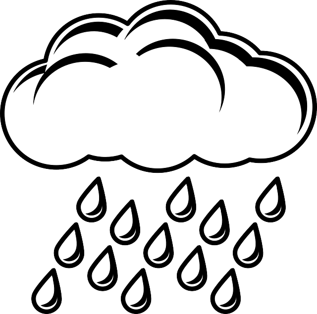

Preston

Today's Weather
High: 34°
Low: Value
Wind Speed:60 miles per hour
message
Monday
40°
Tuesday
30°
Wednsday
20°
Thursday
10°
Friday
0°
The first LDS missionaries to Great Britain arrived in England in July 1837 and felt prompted to first journey to Preston. While there, they preached three times in the Vauxhall Chapel and several individuals petitioned them for baptism.
The first baptisms in England occurred on July 30, 1837 where nine individuals were baptized in the River Ribble in the presence of approximately eight-thousand onlookers. By August 6, nearly fifty individuals had been converted and Elder Heber C. Kimball organized a branch in Preston.1
Heber C. Kimball described the first baptisms as follows:
“I had the pleasure, about 9 a.m., of baptizing nine individuals and hailing them brethren and sisters in the kingdom of God. These were the first persons baptized into the Church in a foreign land, and only the eighth day after our arrival in Preston.
A circumstance took place which I cannot refrain from mentioning, for it will show the eagerness and anxiety of some in that land to obey the Gospel. Two of the male candidates, when they had changed their clothes at a distance of several rods from the place where I was standing in the water, were so anxious to obey the Gospel that they ran with all their might to the water, each wishing to be baptized first. The younger, George D. Watt, being quicker of foot than the elder, outran him, and came first into the water.”
Since those initial baptisms, the Preston area has remained an area of strength and the Preston England Temple was dedicated by President Gordon B. Hinckley on June 7, 1998.
Contact Us
Addres
The weather Center123 Main Street
Franklin, MI 87654